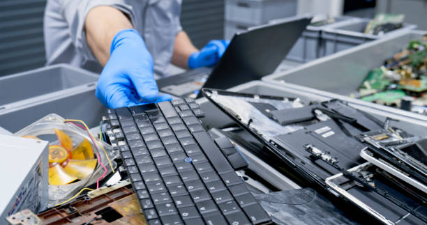
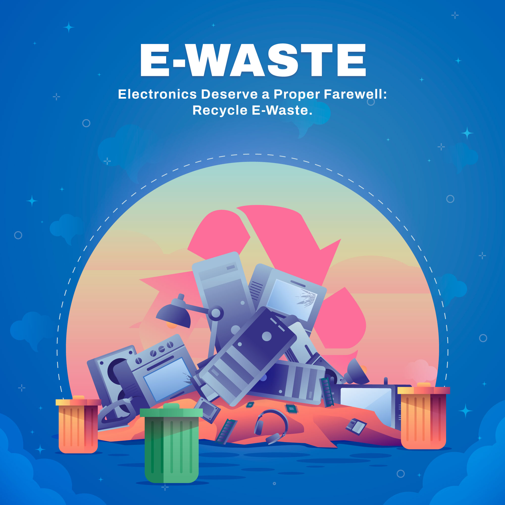
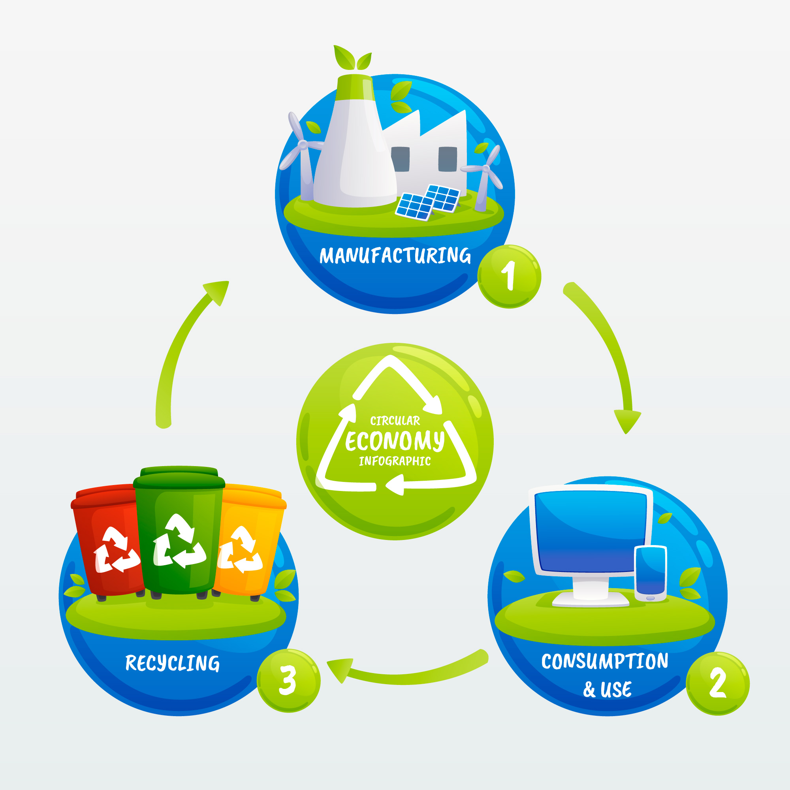

Recycle your old electronics responsibly and earn rewards. Schedule pickups, manage bookings, and track your e-waste journey with ease. Join us in making the world greener and cleaner!
E-waste, or electronic waste, refers to discarded electrical or electronic devices that are no longer in use. These items may contain valuable materials such as metals, plastics, and glass that can be recycled or reused, but they can also contain hazardous substances like lead, mercury, and cadmium that are harmful to the environment.

Improper disposal of e-waste can lead to serious environmental and health hazards. When electronics are dumped in landfills, harmful chemicals can leach into the soil and water, polluting the ecosystem. Additionally, burning e-waste releases toxic fumes, affecting air quality. Responsible recycling helps reduce pollution and recover valuable materials.

Recycling e-waste has many benefits. It helps conserve natural resources, reduces pollution, and ensures that valuable materials such as gold, silver, copper, and rare metals are recovered and reused. Additionally, it prevents harmful toxins from contaminating the environment.
